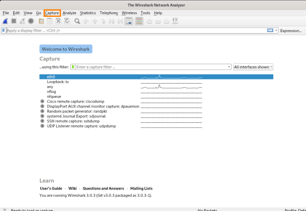
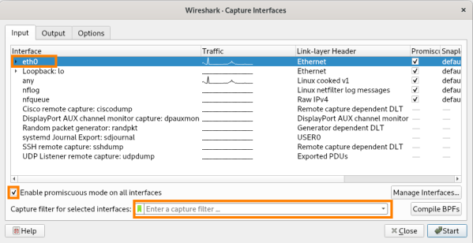

configuration
Usually only root user will be able to capture packets on wireshark but if we want to monitoring untrusted network is better to start wireshark like NONroot user, to do that:
sudo usermod -a -G wireshark {username}
The user may need to log in again to make new group membership take effect
To reconfigure wireshark to its initial state:
sudo dpkg-reconfigure wireshark-common
Capture → options
here we can select:
•
interface: from were start the capture
•
promiscuos mode: enable or disable this mode
•
filter: set a filter so that wireshark capture only packets matching the filters
PCAP files: store a capture from a previous capture session. If we open one of these files we have the same interfaces of a live capture